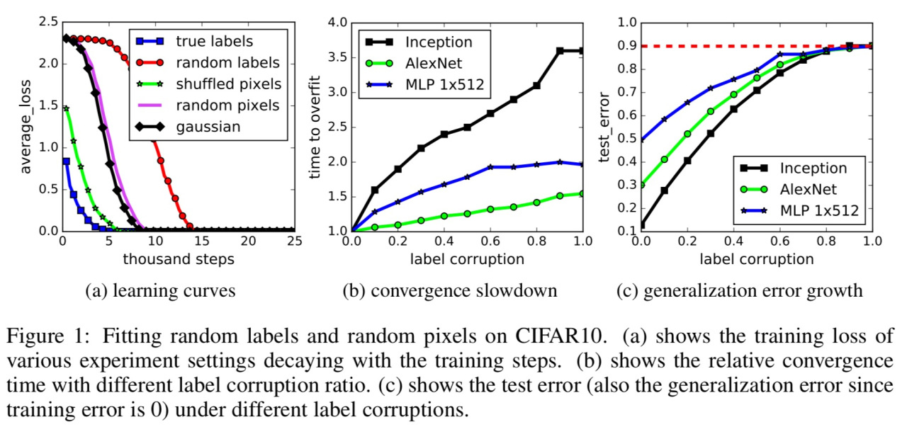
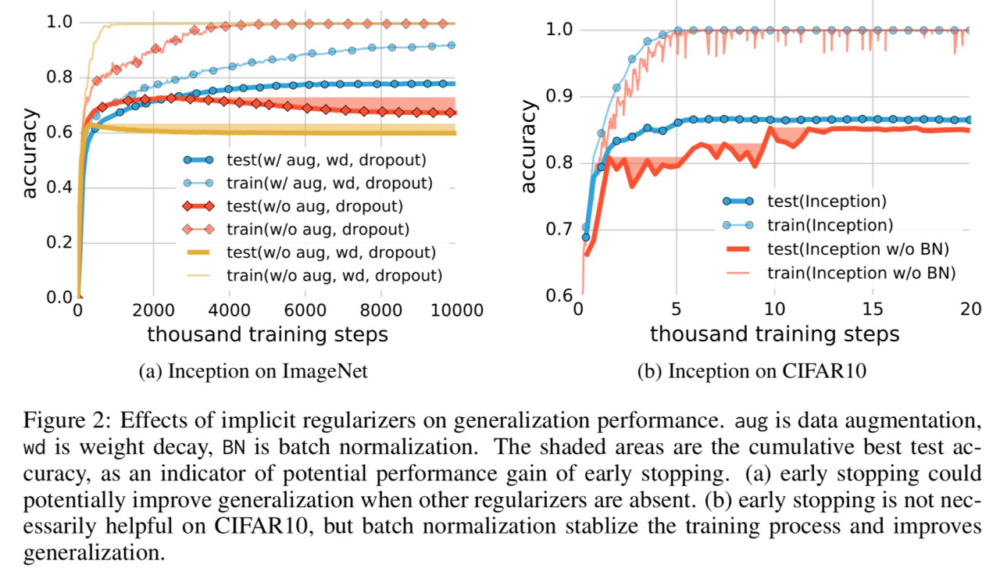
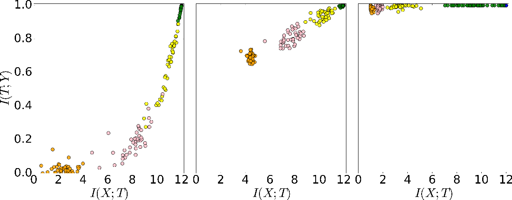

3 minutes
Understanding deep learning requires rethinking generalization - A discussion
Deep neural networks have been highly successful at a number of tasks; this paper takes a step back and looks at why such deep architectures have been successful. In deep neural networks more often than not, we have far more trainable parameters than the number of training examples and for some reason they seem to generalize very well despite violating the conventional rules of statistical learning. This paper seeks to understand generalization at a very fundamental level and tries to answer what causes a neural network to go beyond memorising labels and actually build intuitions about the underlying patterns in the data.
In the first experiment, to probe this question, the authors do something quite interesting - they switch the labels in the training data to be completely random. At first this does not make sense but what’s really interesting is the fact that in spite of being trained on completely random data, the network achieves zero training error. Next they kept the labels the same but replaced the images with completely random pixels and yet again we see zero error during training. The authors argue that the effective capacity of large networks makes it possible to memorise even large datasets like CIFAR-10 since changing the labels to be random is essentially a data transformation.

Another notable finding is that when trained with partially corrupted labels, deeper networks had better test accuracy. The only qualm I have here is that the authors did not address the problem of overfitting well enough here.
The authors then discuss how neural networks have implicit regularization at play since even without explicit regularization methods like dropout and weight decay, neural networks are still able to achieve good enough generalization. Therefore, regularization can’t be the fundamental reason behind generalization.

The authors conclude that effective capacity of deep neural networks are large enough to memorize data. Essentially neural networks are excellent to memorize input-output relationships. Yoshua Bengio et al in their paper “A Closer Look at Memorization in Deep Networks” explore this line of thought further. They find that at first neural networks identify simple patterns by exploiting training examples which have an easier input-output mapping. Once these simple patterns are identified, the neural networks start to memorize the dataset to completely overfit on the dataset. A similar line of work by Schwartz-Ziv and Tishby (“Opening the black box of Deep Neural Networks via Information”) try to explain some of these intuitions using information theory which I found quite interesting. They try to find how much mutual information is present at every activation layer. A truly remarkable insight which they present in their paper is about the training process of neural networks. In the first phase of the training process the network gains information about the label and the input. During the second phase, the network keeps gaining more information about the label but starts to lose information about the input which are irrelevant. This second phase which is much slower regularizes the network.

What really intrigued me in this paper by Zhang et al are the questions that the authors are asking which has led to a lot of interesting line of research. A recent paper by Chollet “On the Measure of Intelligence” talks about the need for a more definitive way to evaluate “intelligence” if we are to move towards AGI. I think understanding generalization at a fundamental level is the key to unlocking AGI.
571 Words
2020-06-21 05:30 +0530